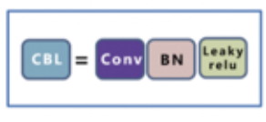
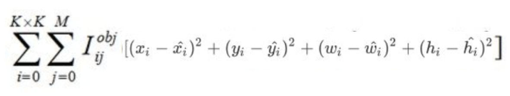

4.5 YoloV3 案例¶
学习目标
- 熟悉TFRecord文件的使用方法
- 知道YoloV3模型结构及构建方法
- 知道数据处理方法
- 能够利用yoloV3模型进行训练和预测

1.TFrecord文件¶
该案例中我们依然使用VOC数据集来进行目标检测，不同的是我们要利用tfrecord文件来存储和读取数据，首先来看一下tfrecord文件的相关内容。
为什么要使用tfrecord文件？
- TFRecord是Google官方推荐使用的数据格式化存储工具，为TensorFlow量身打造的。
- TFRecord规范了数据的读写方式，数据读取和处理的效率都会得到显著的提高。
1.1 什么是TFrecord文件¶
TFRecord 是Google官方推荐的一种数据格式，是Google专门为TensorFlow设计的一种数据格式，利用这种方式存储数据可以使其与网络架构更适配。TFRecord是一种二进制文件，其能更好的利用内存，与csv,hdf5文件是类似的。
TFRecord的文件的内容如下图所示：

TFRecord内部包含多个tf.train.Example，一般来说对应一个图像数据，在一个Example消息体中包含了一系列的tf.train.feature属性，而 每一个feature是一个key-value的键值对，其中，key 是string类型，而value 的取值有三种：
- tf.train.bytes_list: 可以存储string 和byte两种数据类型。图像数据使用这种方式存储即可。
- tf.train.float_list: 可以存储float(float32)与double(float64) 两种数据类型 。
- tf.train.int64_list: 可以存储：bool, enum, int32, uint32, int64, uint64 。
TFRecord 并非是TensorFlow唯一支持的数据格式，也可以使用CSV或文本等其他格式，但是对于TensorFlow来说，TFRecord 是最友好的，最方便的，而且tensorflow也提供了丰富的API帮助我们轻松的创建和获取TFRecord文件。
1.2 将数据转换为TFRecord文件¶
对于中大数据集来说，Google官方推荐先将数据集转化为TFRecord数据, 这样可加快在数据读取, 预处理中的速度。接下来我们就将VOC数据集转换为Records格式，在这里首先读取标注XML文件，并找到对应的图像数据，最后将数据写入TFRecords文件中。
1.2.1 读取标注信息¶
VOC数据集的标注信息存储在xml文件中，在VOC2007的数据中主要获取fIlename，width，height，和object（图像中的目标）下的name（目标名称）和bndbox（框的位置）。具体大家可以看下在FasterRCNN中的介绍，代码如下所示：
import xml.dom.minidom as xdom
# VOC数据集中的类别信息
voc_classes = {
'none': 0,
'aeroplane': 1,
'bicycle': 2,
'bird': 3,
'boat': 4,
'bottle': 5,
'bus': 6,
'car': 7,
'cat': 8,
'chair': 9,
'cow': 10,
'diningtable': 11,
'dog': 12,
'horse': 13,
'motorbike': 14,
'person': 15,
'pottedplant': 16,
'sheep': 17,
'sofa': 18,
'train': 19,
'tvmonitor': 20,
}
# 读取XML文件中的信息
def Prase_Singel_xml(xml_path):
DOMTree = xdom.parse(xml_path)
RootNode = DOMTree.documentElement
#获取XML文件对应的图像
image_name = RootNode.getElementsByTagName("filename")[0].childNodes[0].data
#获取图像宽和高
size = RootNode.getElementsByTagName("size")
image_height = int(size[0].getElementsByTagName("height")[0].childNodes[0].data)
image_width = int(size[0].getElementsByTagName("width")[0].childNodes[0].data)
#获取图像中目标对象
all_obj = RootNode.getElementsByTagName("object")
bndbox_lable_dic = []
# 遍历所有的对象
for one_obj in all_obj:
# 获取目标的标注信息
obj_name = one_obj.getElementsByTagName("name")[0].childNodes[0].data
# 获取对应的label值
obj_label = voc_classes[obj_name]
# 获取bbox
bndbox = one_obj.getElementsByTagName("bndbox")
# 获取目标的左上右下的位置
xmin = int(bndbox[0].getElementsByTagName("xmin")[0].childNodes[0].data)
ymin = int(bndbox[0].getElementsByTagName("ymin")[0].childNodes[0].data)
xmax = int(bndbox[0].getElementsByTagName("xmax")[0].childNodes[0].data)
ymax = int(bndbox[0].getElementsByTagName("ymax")[0].childNodes[0].data)
# 将目标框和类别组合在一起
bndbox_lable_dic.append([xmin, ymin, xmax, ymax, obj_label])
# 返回相应的信息
return image_name, image_width, image_height, bndbox_lable_dic
接下来我们读取一个XML文件看下效果：
# 展示效果
print(Prase_Singel_xml('VOCdevkit/VOC2007/Annotations/000007.xml'))
结果如下所示：
('000007.jpg', 500, 333, [[141, 50, 500, 330, 7]])
从中可以看出，对应的图像是000007.jpg，图像的宽高是500, 333，图像中只包含一个目标，位置是141, 50, 500, 330，类别是7 car.
1.2.2 将数据写入TFRecord文件中¶
在将数据写入时，我们可以使用tf.io.TFRecordWriter来完成，主要步骤是：
1、使用tf.io.TFRecordWriter打开TFRecords文件
2、使用tf.train.Int64List，tf.train.BytesList或tf.train.FloatList对数据进行类型转换
3、将类型转换后的数据传入tf.train.Feature创建的特征中
4、将特征传入tf.train.Example创建的example中
5、使用example.SerializeToString()将example序列化为字符串
6、使用writer.write将序列化后的example写入TFRecords文件
7、最后使用writer.close（）关闭文件
import tensorflow as tf
import glob
import os
# 指明xml文件，tfrecord文件和图像的位置
def write_to_tfrecord(all_xml_path, tfrecord_path, voc_img_path):
# 1、使用tf.io.TFRecordWriter打开TFRecords文件
writer = tf.io.TFRecordWriter(tfrecord_path)
# 遍历所有的XML文件
for i, single_xml_path in enumerate(all_xml_path):
# 读取xml文件中的内容
image_name, image_width, image_height, bndbox_lable_dic = Prase_Singel_xml(single_xml_path)
# 获取图像的路径
sigle_img_path = os.path.join(voc_img_path, image_name)
# 读取图像
image_data = open(sigle_img_path, 'rb').read()
xmin = []
ymin = []
xmax = []
ymax = []
obj_label = []
# 遍历box和label信息，并记录下来
for j in range(len(bndbox_lable_dic)):
xmin.append(bndbox_lable_dic[j][0])
ymin.append(bndbox_lable_dic[j][1])
xmax.append(bndbox_lable_dic[j][2])
ymax.append(bndbox_lable_dic[j][3])
obj_label.append(bndbox_lable_dic[j][4])
# 创建特征：图像，size,box和label
# 2、使用tf.train.Int64List，tf.train.BytesList或tf.train.FloatList对数据进行类型转换
# 3、将类型转换后的数据传入tf.train.Feature创建的特征中
feature = {
'image': tf.train.Feature(bytes_list=tf.train.BytesList(value=[image_data])),
'width': tf.train.Feature(float_list=tf.train.FloatList(value=[image_width])),
'height': tf.train.Feature(float_list=tf.train.FloatList(value=[image_height])),
'xmin': tf.train.Feature(float_list=tf.train.FloatList(value=xmin)),
'ymin': tf.train.Feature(float_list=tf.train.FloatList(value=ymin)),
'xmax': tf.train.Feature(float_list=tf.train.FloatList(value=xmax)),
'ymax': tf.train.Feature(float_list=tf.train.FloatList(value=ymax)),
'label': tf.train.Feature(int64_list=tf.train.Int64List(value=obj_label))
}
# 4、将特征传入tf.train.Example创建的example中
example = tf.train.Example(features=tf.train.Features(feature=feature))
# 将example写入到tfrecord文件中
# 5、使用example.SerializeToString()将example序列化为字符串
# 6、使用writer.write将序列化后的example写入TFRecords文件
writer.write(example.SerializeToString())
# 最后使用writer.close（）关闭文件
writer.close()
print('第{}张图片写入完毕'.format(i))
接下来调用上述方法将VOC数据写入到TFRecord文件中：
# 获取所有的xml文件
all_xml_path = glob.glob('VOCdevkit/VOC2007/Annotations/*.xml')
# 指定tfrecords文件的路径
tfrecord_path = 'voc_2007.tfrecords'
# 指定图像所在的路径
voc_img_path = 'VOCdevkit/VOC2007/JPEGImages'
# 将信息写入到tfrecord文件中
write_to_tfrecord(all_xml_path, tfrecord_path, voc_img_path)
结果如下所示：
1.3 读取TFRecord文件¶
VOC数据集已经被写入到TFRecord文件中了，那我们就要从TFrecord文件中将数据读取出来。只需要简单的使用 tf.data.TFRecordDataset 就能够轻松的读取数据。
- 使用tf.data.TFRecordDataset来获取TFRecord文件中的数据
- 定义特征的描述方法，与写入时是对应的
- 使用tf.io.parse_single_example将一个example转换为原始数据
- 使用功能map方法对所有数据进行处理获取最终的结果（map方法稍后介绍）
import tensorflow as tf
import os
import numpy as np
import matplotlib.pyplot as plt
from matplotlib.patches import Rectangle
# 获取tfreocrd中的所有数据
raw_datasets = tf.data.TFRecordDataset('voc_2007.tfrecords')
# 定义特征的描述方法：图像，box和label,注意：要和写入时是一一对应的
feature_description = {
'image': tf.io.FixedLenFeature([], tf.string),
'width': tf.io.FixedLenFeature([], tf.float32),
'height': tf.io.FixedLenFeature([], tf.float32),
'xmin': tf.io.VarLenFeature(tf.float32),
'ymin': tf.io.VarLenFeature(tf.float32),
'xmax': tf.io.VarLenFeature(tf.float32),
'ymax': tf.io.VarLenFeature(tf.float32),
'label': tf.io.VarLenFeature(tf.int64),
}
# 将tfrecord中的数据转换为原始图像和标注信息（只能对一个数据进行处理）
def parse_example(example_string):
# 将tfreocord文件中的一个example映射回原始数据
feature_dict = tf.io.parse_single_example(example_string, feature_description)
# 获取图像数据
image_data = tf.io.decode_jpeg(feature_dict['image'])
# 获取box
boxes = tf.stack([tf.sparse.to_dense(feature_dict['xmin']),
tf.sparse.to_dense(feature_dict['ymin']),
tf.sparse.to_dense(feature_dict['xmax']),
tf.sparse.to_dense(feature_dict['ymax'])], axis=1)
# 获取标注信息
boxes_category = tf.sparse.to_dense(feature_dict['label'])
# 返回结果
return image_data, feature_dict['width'], feature_dict['height'], boxes, boxes_category
# 利用map方法调用parse_example方法对所有数据进行处理，得到最终的经过
raw_datasets = raw_datasets.map(parse_example)
我们将从TFRecord文件中读取的数据展示出来：
# 将VOC_class字典的key和value进行翻转
new_voc_class = {v:k for k,v in voc_classes.items()}
# 将tfrecord中的图像进行展示
plt.figure(figsize=(15, 10))
# 初始化：第几个图像
i = 0
# 从raw_datasets中选取3个样本，获取图像，大小，框的标注信息和类别信息
for image, width, height, boxes, boxes_category in raw_datasets.take(3):
# 进行绘图
plt.subplot(1, 3, i+1)
# 绘制图像
plt.imshow(image)
# 获取坐标区域
ax = plt.gca()
# 遍历所有的框
for j in range(boxes.shape[0]):
# 绘制框
rect = Rectangle((boxes[j, 0], boxes[j, 1]), boxes[j, 2] -boxes[j, 0], boxes[j, 3]-boxes[j, 1], color='r', fill=False)
# 将框显示在图像上
ax.add_patch(rect)
# 显示标注信息
# 获取标注信息的id
label_id = boxes_category[j]
# 获取标准信息
label = new_voc_class.get(label_id.numpy())
# 将标注信息添加在图像上
ax.text(boxes[j, 0], boxes[j, 1] + 8, label,color='w', size=11, backgroundcolor="none")
# 下一个结果
i += 1
# 显示图像
plt.show()
结果为：
1.4 数据处理的Pipeline¶
使用数据处理的tf.data.Dataset模块中pipline机制，可实现CPU多线程处理输入的数据，如读取图片和图片的一些的预处理，这样GPU可以专注于训练过程，而CPU去准备数据。
Dataset支持一类特殊的操作：Transformation。一个Dataset通过Transformation变成一个新的Dataset。通常我们可以通过Transformation完成数据变换，打乱，组成batch，生成epoch等一系列操作。常用的Transformation有：map、batch、shuffle和repeat。解析tfrecord文件得到的数据都可以使用这些方法，例如我们前面使用的：
# 利用map方法调用parse_example方法对所有数据进行处理，得到最终的经过
raw_datasets = raw_datasets.map(parse_example)
下面我们分别介绍：
1.4.1 map¶
使用 tf.data.Dataset.map，我们可以很方便地对数据集中的各个元素进行预处理。因为输入元素之间时独立的，所以可以在多个 CPU 核心上并行地进行预处理。map 变换提供了一个 num_parallel_calls参数去指定并行的级别。
dataset = dataset.map(map_func=parse_fn, num_parallel_calls=FLAGS.num_parallel_calls)
1.4.2 repeat¶
repeat的功能就是将整个序列重复多次，主要用来处理机器学习中的epoch，假设原先的数据是一个epoch，使用repeat(5)就可以将之变成5个epoch的数据。
1.4.3 prefetch¶
tf.data.Dataset.prefetch 提供解耦了 数据产生的时间 和 数据消耗的时间。具体来说，在数据被请求前，就从 dataset 中预加载一些数据，从而进一步提高性能。prefech(n) 一般作为最后一个 transformation，其中 n 为 batch_size。 prefetch 的使用方法如下：
# 最后一个变换
dataset = dataset.prefetch(buffer_size=FLAGS.prefetch_buffer_size)
return dataset
另外还可使用bacth方法组成批次数据送入网络中，也可使用shuffle方法对数据打乱。
1.5. 数据处理¶
yoloV3模型的输入图像的大小是32的倍数，所以我们需要对图像进行处理。在这里我们将图像的尺度调整为416x416的大小，为了保持长宽比，我将四周为0的像素以灰度值128进行填充。
def preprocess(image, bbox, input_shape=(416, 416)):
# 增加batch维
image = tf.expand_dims(image, axis=0)
# 获取图像的高宽[height, width]
img_shape = image.shape[1:3]
# 将图像进行调整，插值方法是双三次插值，保留长宽比
resize_image = tf.image.resize(
image, input_shape, method=tf.image.ResizeMethod.BICUBIC, preserve_aspect_ratio=True)
# 获取图像的宽高[height,width]
resize_shape = resize_image.shape[1:3]
# 图像上方的填充大小
top_pad = (input_shape[0] - resize_shape[0]) // 2
# 图像下方的填充大小
bottom_pad = input_shape[0] - resize_shape[0] - top_pad
# 图像左方的填充大小
left_pad = (input_shape[1] - resize_shape[1]) // 2
# 图像右方的填充大小
right_pad = input_shape[1] - resize_shape[1] - left_pad
# 将图像周围填充128
resize_image = tf.pad(resize_image, [[0, 0], [top_pad, bottom_pad], [
left_pad, right_pad], [0, 0]], constant_values=128)
# 类型转化
image_data = tf.cast(resize_image, tf.float32) / 255.
# 对标注框进行调整：进行尺度和平移调整
# 尺度变换
bbox = bbox * tf.convert_to_tensor(
[resize_shape[1], resize_shape[0], resize_shape[1], resize_shape[0]], dtype=tf.float32)
# 除以原图像大小
bbox = bbox / tf.convert_to_tensor(
[img_shape[1], img_shape[0], img_shape[1], img_shape[0]], dtype=tf.float32)
# 平移,获取最终的结果
bbox = bbox + tf.convert_to_tensor(
[left_pad, top_pad, left_pad, top_pad], dtype=tf.float32)
# 返回
return image_data, bbox
经过图像处理的送入到网络中的图像结果为:
# 将VOC_class字典的key和value进行翻转
new_voc_class = {v:k for k,v in voc_classes.items()}
# 将tfrecord中的图像进行展示
plt.figure(figsize=(15, 10))
i=0
# 从raw_datasets中选取3个样本，获取图像，大小，框的标注信息和类别信息
for image, width, height, boxes, boxes_category in raw_datasets.take(3):
# 图像处理
image, boxes = preprocess(image, boxes)
# 进行绘图
plt.subplot(1, 3, i+1)
# 绘制图像
plt.imshow(image[0])
# 获取坐标区域
ax = plt.gca()
# 遍历所有的框
for j in range(boxes.shape[0]):
# 绘制框
rect = Rectangle((boxes[j, 0], boxes[j, 1]), boxes[j, 2] -boxes[j, 0], boxes[j, 3]-boxes[j, 1], color='r', fill=False)
# 将框显示在图像上
ax.add_patch(rect)
# 显示标注信息
# 获取标注信息的id
label_id = boxes_category[j]
# 获取标准信息
label = new_voc_class.get(label_id.numpy())
# 将标注信息添加在图像上
ax.text(boxes[j, 0], boxes[j, 1] + 8, label,color='w', size=11, backgroundcolor="none")
# 下一个结果
i += 1
# 显示图像
plt.show()
效果如下图所示:
2.模型构建¶
yoloV3的模型结构如下所示：整个v3结构里面，没有池化层和全连接层，网络的下采样是通过设置卷积的stride为2来达到的，每当通过这个卷积层之后图像的尺寸就会减小到一半。
2.1 基本组件¶
基本组件指蓝色方框内部分：
2.1.1 CBL¶
Yolov3网络结构中的最小组件，由Conv+Bn+Leaky_relu激活函数三者组成，

源码实现如下：
def ConvBlock(input_shape, filters, kernel_size, strides=(1, 1), padding=None):
# padding根据步长的大小进行修改
padding = 'valid' if strides == (2, 2) else 'same'
# 输入
inputs = tf.keras.Input(shape=input_shape)
# 卷积层：加入L2正则化的卷积层
conv = tf.keras.layers.Conv2D(filters, kernel_size=kernel_size, strides=strides,
padding=padding, kernel_regularizer=tf.keras.regularizers.l2(l=5e-4))(inputs)
# BN 层
bn = tf.keras.layers.BatchNormalization()(conv)
# 激活函数
relu = tf.keras.layers.LeakyReLU(alpha=0.1)(bn)
# 模型构建
return tf.keras.Model(inputs=inputs, outputs=relu)
2.1.2 ResX¶
残差组件借鉴Resnet网络中的残差结构，让网络可以构建的更深,ResX由一个CBL和X个残差组件构成，是Yolov3中的大组件。每个Res模块前面的CBL都起到下采样的作用。
def ResBlock(input_shape, filters, blocks):
# 指定输入
inputs = tf.keras.Input(shape=input_shape)
# 对输入进行pad
pad = tf.keras.layers.ZeroPadding2D(padding=((1, 0), (1, 0)))(inputs)
# 卷积步长为2
results = ConvBlock(pad.shape[1:], filters=filters,
kernel_size=(3, 3), strides=(2, 2))(pad)
# 构建残差单元
for i in range(blocks):
# 卷积
results_conv = ConvBlock(
results.shape[1:], filters=filters // 2, kernel_size=(1, 1))(results)
# 卷积
results_conv = ConvBlock(
results_conv.shape[1:], filters=filters, kernel_size=(3, 3))(results_conv)
# 融和
results = tf.keras.layers.Add()([results_conv, results])
# 返回模型
return tf.keras.Model(inputs=inputs, outputs=results)
2.2 BackBone¶
BackBone是DarkNet53构成,用来进行特征提取，主要是ResX模块。

def Body(input_shape):
# 模型输入
inputs = tf.keras.Input(shape=input_shape)
# 卷积结果(batch, 416, 416, 32)
cb = ConvBlock(inputs.shape[1:], filters=32, kernel_size=(3, 3))(
inputs)
# 残差模块 (batch, 208, 208, 64)
rb1 = ResBlock(cb.shape[1:], filters=64, blocks=1)(
cb)
# (batch, 104, 104, 128)
rb2 = ResBlock(rb1.shape[1:], filters=128, blocks=2)(
rb1)
# (batch, 52, 52, 256)
rb3 = ResBlock(rb2.shape[1:], filters=256, blocks=8)(
rb2)
# (batch, 26, 26, 512)
rb4 = ResBlock(rb3.shape[1:], filters=512, blocks=8)(
rb3)
# (batch, 13, 13, 1024)
rb5 = ResBlock(rb4.shape[1:], filters=1024, blocks=4)(
rb4)
return tf.keras.Model(inputs=inputs, outputs=(rb5, rb4, rb3))
2.3 输出部分¶
输出是3个尺度输出的CBL串联结构：
def Output(input_shape, input_filters, output_filters):
# 输入数据
inputs = tf.keras.Input(shape=input_shape)
# 输出连续的六个模块
cb1 = ConvBlock(
inputs.shape[1:], filters=input_filters, kernel_size=(1, 1))(inputs)
cb2 = ConvBlock(
cb1.shape[1:], filters=input_filters * 2, kernel_size=(3, 3))(cb1)
cb3 = ConvBlock(cb2.shape[1:], filters=input_filters,
kernel_size=(1, 1))(cb2)
cb4 = ConvBlock(
cb3.shape[1:], filters=input_filters * 2, kernel_size=(3, 3))(cb3)
cb5 = ConvBlock(cb4.shape[1:], filters=input_filters,
kernel_size=(1, 1))(cb4)
cb6 = ConvBlock(
cb5.shape[1:], filters=input_filters * 2, kernel_size=(3, 3))(cb5)
# 最后的第七个卷积块
cb7 = ConvBlock(
cb6.shape[1:], filters=output_filters, kernel_size=(1, 1))(cb6)
return tf.keras.Model(inputs=inputs, outputs=(cb5, cb7))
2.4 V3模型构建¶
将模型的backbone输出的特征图进行融合后送入到output模块，构建整个yoloV3模型。

def YOLOv3(input_shape, class_num=80):
# anchor数目
anchor_num = 3
# 输入数据
inputs = tf.keras.Input(shape=input_shape)
# 获取backbone输出的3个特征图
large, middle, small = Body(inputs.shape[1:])(inputs)
# 较大目标的检测
x1, y1 = Output(large.shape[1:], 512, anchor_num * (class_num + 5))(large)
# reshape成最终的数据结果
y1 = tf.keras.layers.Reshape(
(input_shape[0] // 32, input_shape[1] // 32, 3, 5 + class_num))(y1)
# 中等目标的检测
cb1 = ConvBlock(x1.shape[1:], filters=256, kernel_size=(1, 1))(x1)
# 上采样
us1 = tf.keras.layers.UpSampling2D(2)(cb1)
# 拼接
cat1 = tf.keras.layers.Concatenate()([us1, middle])
# 计算输出结果
x2, y2 = Output(cat1.shape[1:], 256, anchor_num * (class_num + 5))(cat1)
# reshape成最终的数据结果
y2 = tf.keras.layers.Reshape(
(input_shape[0] // 16, input_shape[1] // 16, 3, 5 + class_num))(y2)
# 较小目标检测
cb2 = ConvBlock(x2.shape[1:], filters=128, kernel_size=(1, 1))(x2)
# 上采样
us2 = tf.keras.layers.UpSampling2D(2)(cb2)
# 拼接
cat2 = tf.keras.layers.Concatenate()([us2, small])
# 计算输出结果
x3, y3 = Output(cat2.shape[1:], 128, anchor_num * (class_num + 5))(cat2)
# reshape成最终的数据结果
y3 = tf.keras.layers.Reshape(
(input_shape[0] // 8, input_shape[1] // 8, 3, 5 + class_num))(y3)
# 返回结果
return tf.keras.Model(inputs=inputs, outputs=(y1, y2, y3))
2.5 输出结果处理¶
网络的输出结果是：
坐标是对anchor的修正，将其转换中心点坐标和宽高的形式，在预测过程和计算损失函数时使用。
V3网络输出的结果为$ t_x,t_y,t_w,t_h$ 与边框表示 b_x,b_y,b_w,b_h之间的关系是：
c_x,c_y是当前网格左上角到图像左上角的距离， p_w,p_h是先验框的宽和高。根据上述关系对网络的输出进行修正。
另外对于分类的输出结果应送入到Sigmoid激活函数中进行处理。
在这里我们使用了一个常见的方法，它的作用是把任意的表达式function作为一个“Layer”对象:
keras.layers.Lambda(function, output_shape=None, mask=None, arguments=None)
参数：
- function：需要封装的函数。
- output_shape: 预期的函数输出尺寸。
- arguments: 可选的需要传递给函数的关键字参数
转换过程如下：
# 将网络的输出结果转换为bbox的坐标及宽高
def OutputParser(input_shape, img_shape, anchors):
# feats/input_shape的意义：[batch,height,width,anchor_num,(1(delta x) + 1(delta y) + 1(width scale) + 1(height scale) + 1(object mask) + class_num(class probability))]
feats = tf.keras.Input(input_shape)
# 获取网格grid的左上角x,y坐标，对应着cx,cy
# 获取行y的坐标
# 1.使用tf.shape获取feats的高
# 2.使用tf.cast进行类型转换，转换为float32类型
# 3.使用tf.range创建数字序列
# 4.使用tf.reshape进行形状转换为(height,1,1,1)
# 5.使用tf.tile对上述结果按照列数x进行平铺
# 6.使用tf.keras.layers.Lambda转换成层
grid_y = tf.keras.layers.Lambda(lambda x: tf.tile(tf.reshape(tf.range(tf.cast(tf.shape(
x)[1], dtype=tf.float32), dtype=tf.float32), (-1, 1, 1, 1)), (1, tf.shape(x)[2], 1, 1)))(feats)
# 获取列x的坐标
# 1.使用tf.shape获取feats的宽
# 2.使用tf.cast进行类型转换，转换为float32类型
# 3.使用tf.range创建数字序列
# 4.使用tf.reshape进行形状转换为(1,width,1,1)
# 5.使用tf.tile对上述结果按照行数y进行平铺
# 6.使用tf.keras.layers.Lambda转换成层
grid_x = tf.keras.layers.Lambda(lambda x: tf.tile(tf.reshape(tf.range(tf.cast(tf.shape(
x)[2], dtype=tf.float32), dtype=tf.float32), (1, -1, 1, 1)), (tf.shape(x)[1], 1, 1, 1)))(feats)
# 构建grid的网格表示
# grid.shape = (grid h, grid w, 1, 2)
grid = tf.keras.layers.Concatenate(axis=-1)([grid_x, grid_y])
# 获取每一个检测结果中心点坐标:将预测结果转换为中心点坐标
# box_xy = (delta x, delta y) + (priorbox upper left x,priorbox upper left y) / (feature map.width, feature map.height)
# box_xy.shape = (batch, grid h, grid w, anchor_num, 2)
box_xy = tf.keras.layers.Lambda(lambda x: (tf.math.sigmoid(x[0][..., 0:2]) + x[1]) / tf.cast(
[tf.shape(x[1])[1], tf.shape(x[1])[0]], dtype=tf.float32))([feats, grid])
# box_wh.shape = (batch, grid h, grid w, anchor_num, 2)
# 获取检测结果的宽高
# box_wh = (width scale, height scale) * (anchor width, anchor height) / (image.width, image.height)
box_wh = tf.keras.layers.Lambda(lambda x, y, z: tf.math.exp(x[..., 2:4]) * y / tf.cast(
[z[1], z[0]], dtype=tf.float32), arguments={'y': anchors, 'z': img_shape})(feats)
# 获取某一个anchor中包含目标的概率
box_confidence = tf.keras.layers.Lambda(
lambda x: tf.math.sigmoid(x[..., 4]))(feats)
# 获取某一个anchor属于某一个类别的概率
box_class_probs = tf.keras.layers.Lambda(
lambda x: tf.math.sigmoid(x[..., 5:]))(feats)
# 返回输出结果
return tf.keras.Model(inputs=feats, outputs=(box_xy, box_wh, box_confidence, box_class_probs))
3.模型训练¶
3.1损失函数的计算¶
YoloV3的损失函数分为三部分：
- box的损失：
只有负责检测的gridcell中的anchor才会计入损失,对x,y,w,h分别求均方误差

- 置信度的损失
置信度的损失是二分类的交叉熵损失函数，所有的box都计入损失计算

- 分类的损失：
分类的损失是二分类的交叉熵损失，只有负责检测目标的才计算损失

def Loss(img_shape, class_num=80):
# anchor的尺度：分别检测小，中，大的目标
anchors = {2: [[10, 13], [16, 30], [33, 23]], 1: [[30, 61], [
62, 45], [59, 119]], 0: [[116, 90], [156, 198], [373, 326]]}
# 构建计算损失函数的数组
input_shapes = [
(img_shape[0] // 32, img_shape[1] // 32, 3, 5 + class_num),
(img_shape[0] // 16, img_shape[1] // 16, 3, 5 + class_num),
(img_shape[0] // 8, img_shape[1] // 8, 3, 5 + class_num)
]
# 网络的输出值
inputs = [tf.keras.Input(input_shape) for input_shape in input_shapes]
# 目标值
labels = [tf.keras.Input(input_shape) for input_shape in input_shapes]
losses = list()
# 遍历三个尺度的输出
for l in range(3):
# 获取当前尺度的形状
input_shape_of_this_layer = input_shapes[l]
# 获取当前尺度的anchor
anchors_of_this_layer = anchors[l]
# 获取网络输出
input_of_this_layer = inputs[l]
# 获取对应的目标值
label_of_this_layer = labels[l]
# YOLOV3模型输出的结果：中心点坐标，宽高，置信度
pred_xy, pred_wh, pred_box_confidence, pred_class = OutputParser(
input_shape_of_this_layer, img_shape, anchors_of_this_layer)(input_of_this_layer)
# 预测框
pred_box = tf.keras.layers.Concatenate()([pred_xy, pred_wh])
# 真实值
true_box = tf.keras.layers.Lambda(
lambda x: x[..., 0:4])(label_of_this_layer)
true_box_confidence = tf.keras.layers.Lambda(
lambda x: x[..., 4])(label_of_this_layer)
true_class = tf.keras.layers.Lambda(
lambda x: x[..., 5:])(label_of_this_layer)
# 获取box的置信度
object_mask = tf.keras.layers.Lambda(
lambda x: tf.cast(x, dtype=tf.bool))(true_box_confidence)
# 计算MSE损失：只有正样本参与损失计算
pos_loss = tf.keras.layers.Lambda(lambda x:
tf.math.reduce_sum(tf.keras.losses.MSE(
tf.boolean_mask(x[0], x[2]),
tf.boolean_mask(x[1], x[2])
))
)([true_box, pred_box, object_mask])
# 置信度的损失：交叉熵损失
confidence_loss = tf.keras.layers.Lambda(lambda x:
# 正样本的损失
tf.keras.losses.BinaryCrossentropy(from_logits=False)(
tf.boolean_mask(
x[0], x[2]),
tf.boolean_mask(
x[1], x[2])
) +
# 负样本的损失
100 * tf.keras.losses.BinaryCrossentropy(from_logits=False)(
tf.boolean_mask(
x[0], tf.math.logical_not(x[2])),
tf.boolean_mask(
x[1], tf.math.logical_not(x[2]))
)
)([true_box_confidence, pred_box_confidence, object_mask])
# 分类损失：只有正样本计算损失
class_loss = tf.keras.layers.Lambda(lambda x:
tf.keras.losses.BinaryCrossentropy(from_logits=False)(
tf.boolean_mask(x[0], x[2]),
tf.boolean_mask(x[1], x[2])
)
)([true_class, pred_class, object_mask])
# 损失结果
loss = tf.keras.layers.Lambda(lambda x: tf.math.add_n(x))(
[pos_loss, confidence_loss, class_loss])
losses.append(loss)
# 计算损失值
loss = tf.keras.layers.Lambda(lambda x: tf.math.add_n(x))(losses)
return tf.keras.Model(inputs=(*inputs, *labels), outputs=loss)
3.2 正负样本的设定¶
在上述的loss计算中，负责进行目标预测的anchor就是正样本，而不负责进行目标预测的就是负样本，也就是背景，那在这里我们是如何设置正负样本的呢？如下图所示：

- 正样本：首先计算目标中心点落在哪个grid上，然后计算这个grid对应的3个先验框（anchor）和目标真实位置的IOU值，取IOU值最大的先验框和目标匹配。那么该anchor 就负责预测这个目标，那这个anchor就作为正样本，将其置信度设为1，其他的目标值根据标注信息设置。
- 负样本：所有不是正样本的anchor都是负样本，将其置信度设为0，参与损失计算，其它的值不参与损失计算，默认为0。
在实现的时候，为了提高计算速度做了优化，在计算是否为正样本时，我们认为anchor和目标的中心点是相同的，直接利用anchor和目标box的宽高计算交并比，确定正样本。实现如下：
- 定义anchor:
YOLOv3_anchors = np.array([[10, 13], [16, 30], [33, 23], [30, 61], [62, 45], [
59, 119], [116, 90], [156, 198], [373, 326]], dtype=np.int32)
- 定义方法计算anchor对应的目标值，确定正负样本：
def bbox_to_tensor(bbox, label, input_shape=(416, 416), anchors=YOLOv3_anchors, num_classes=80):
# bbox：真实值坐标表示为(xmin,ymin,xmax,ymax)，是相对坐标
# label： 每个bbox的类别
# anchors = (9,2)
# 返回：anchor对应的真实值,即正负样本的标记结果
- 获取尺度个数和box的绝对坐标
# 获取有几个尺度的输出，每个尺度对应3个anchor:3
num_layers = anchors.shape[0] // 3
# anchor对应的特征图掩码：第一个特征图对应第6，7，8个anchor...
anchor_mask = tf.cond(tf.equal(num_layers, 3), lambda: tf.constant(
[[6, 7, 8], [3, 4, 5], [0, 1, 2]]), lambda: tf.constant([[3, 4, 5], [1, 2, 3]]))
# bbox的相对中心点坐标
true_boxes_xy = (bbox[..., 0:2] + bbox[..., 2:4]) / 2.
# bbox的相对宽高
true_boxes_wh = tf.math.abs(bbox[..., 2:4] - bbox[..., 0:2])
# bbox的结果:将中心点坐标和宽高拼接在一起
true_boxes = tf.concat([true_boxes_xy, true_boxes_wh], axis=-1)
# bbox的绝对坐标和绝对宽高
boxes_xy = true_boxes[..., 0:2] * input_shape
boxes_wh = true_boxes[..., 2:4] * input_shape
- 创建一个与网络输出大小相同的全零数组，用来设置真实值
# 生成与yoloV3输出结果相同大小的全0数组：y_true.shape[layer] = (height, width, anchor num, 5 + class num)
y_true = tuple((np.zeros(shape=(input_shape[0] // {0: 32, 1: 16, 2: 8}[l], input_shape[1] // {0: 32, 1: 16, 2: 8}[
l], tf.shape(anchor_mask[l, ...])[0], 5 + num_classes), dtype=np.float32) for l in range(num_layers)))
- 计算anchor的位置信息
# 扩展一个维度，用来存放anchor的索引
anchors = tf.expand_dims(tf.convert_to_tensor(anchors, dtype=tf.float32), 0)
# 用于计算交并比
# 以anchor中心为原点，计算右下角坐标
anchor_maxes = anchors / 2.
# 以anchor中心为原点，计算左上角坐标
anchor_mins = -anchor_maxes
- 对目标进行筛选，只有宽度大于0的认为是真正的目标
# 创建一个mask,指明目标是否存在，宽度大于0的认为是真实的目标
valid_mask = tf.greater(boxes_wh[..., 0], 0）
# 获取真实的目标的宽高
wh = tf.boolean_mask(boxes_wh, valid_mask)
# 获取真实目标的box：valid_true_boxes.shape = (valid box num, 4)
valid_true_boxes = tf.boolean_mask(boxes, valid_mask)
# 获取真实目标的标签值：valid_label.shape = (valid box num)
valid_label = tf.boolean_mask(label, valid_mask)
- 获取与目标交并最大的anchor,那这些anchor即为正样本
# 当图像中存在目标时，计算与目标交并比最大的anchor作为正样本，并设置标记结果
if wh.shape[0] > 0:
# 扩展一个维度，用来存放对应的anchor：wh.shape = (valid box num, 1, 2)
wh = tf.expand_dims(wh, -2)
# 以box的中心点为原点：计算右下角坐标：max of width, height, box_maxes.shape = (valid box num, 1, 2)
box_maxes = wh / 2
# 以box的中心点为原点：计算左上角坐标：min of width, height, box_mins.shape = (valid box num, 1, 2)
box_mins = -box_maxes
# 计算box与anchor交的左上角坐标：intersect_mins.shape = (valid box num, anchor num(9), 2)
intersect_mins = tf.math.maximum(box_mins, anchor_mins)
# 计算box与anchor交的右下角坐标：intersect_maxes.shape = (valid box num, anchor num(9), 2)
intersect_maxes = tf.math.minimum(box_maxes, anchor_maxes)
# 计算交集的宽高：intersect_wh.shape = (valid box num, anchor num(9), 2)
intersect_wh = tf.math.maximum(intersect_maxes - intersect_mins, 0.)
# 计算交集的面积：intersect_area.shape = (valid box num, anchor num(9))
intersect_area = intersect_wh[..., 0] * intersect_wh[..., 1]
# 计算box的面积：box_area.shape = (valid box_num, 1)
box_area = wh[..., 0] * wh[..., 1]
# 计算anchor的面积：anchor_area.shape = (1, anchor num(9))
anchor_area = anchors[..., 0] * anchors[..., 1]
# 计算交并比：iou.shape = (valid box num, anchor num(9))
iou = intersect_area / (box_area + anchor_area - intersect_area)
# 计算与box交并比最大的anchor,将其作为正样本：best_anchor.shape = (valid box num)
best_anchor = tf.math.argmax(iou, axis=-1, output_type=tf.int32)
- 遍历匹配成功的anchor(正样本)，设置目标值
# 遍历与box匹配成功的anchor
for t in range(tf.shape(best_anchor)[0]):
# 获取第t个anchor
n = best_anchor[t]
# 获取anchor的位置
pos = tf.where(tf.equal(anchor_mask, n))
# 获取尺度值：0，1，2
l = pos[0][0]
# 获取对应的anchor索引
k = pos[0][1]
# 获取anchor对应的grid cell的列数，限制在0到最大值之间
i = int(tf.clip_by_value(
valid_true_boxes[t, 1] * y_true[l].shape[0], clip_value_min=0, clip_value_max=y_true[l].shape[0] - 1))
# 获取anchor对应的grid cell的行数，限制在0到最大值之间
j = int(tf.clip_by_value(
valid_true_boxes[t, 0] * y_true[l].shape[1], clip_value_min=0, clip_value_max=y_true[l].shape[1] - 1))
# 获取anchor的类别
c = valid_label[t]
# box的位置:(x,y,width,height)
y_true[l][i, j, k, 0:4] = valid_true_boxes[t, 0:4]
# 匹配上的都包含目标，置信度设为1
y_true[l][i, j, k, 4] = 1
# 类别信息
y_true[l][i, j, k, 5 + c] = 1
- 返回结果
# 返回3个尺度对应的真实值
return (tf.convert_to_tensor(y_true[0]), tf.convert_to_tensor(y_true[1]), tf.convert_to_tensor(y_true[2]))
3.3 模型训练¶
接下来我们利用已搭建好的网络和数据进行模型训练：
3.3.1 获取数据集¶
- 首先从TFRecord文件中获取数据，并进行数据处理，得到对应的目标值，这些通过map方法来实现
1.定义方法进行数据处理和获取目标值
def map_function_impl(image, bbox, label):
# 图像尺度调整
image, bbox = preprocess(image, bbox, random=True)
# 获取对应的目标值
label1, label2, label3 = bbox_to_tensor(bbox, label)
# 返回结果
return image, label1, label2, label3
2.使用py_function来提高性能
def map_function(image, width, height, boxes, boxes_category):
# 对数据进行处理，获取图像及目标值：提升性能
image, label1, label2, label3 = tf.py_function(map_function_impl, inp=[
image, boxes, boxes_category], Tout=[tf.float32, tf.float32, tf.float32, tf.float32])
# 对图像和目标值进行尺度调整
image = tf.reshape(image, (416, 416, 3))
label1 = tf.reshape(label1, (13, 13, 3, 85))
label2 = tf.reshape(label2, (26, 26, 3, 85))
label3 = tf.reshape(label3, (52, 52, 3, 85))
# 返回结果
return image, (label1, label2, label3)
3.使用map方法对从TFRcords中读取的数据进行处理
# 从TFRecord文件中获取数据，并进行处理
batch_size=10
trainset = raw_datasets.map(map_function).shuffle(batch_size).batch(
batch_size).prefetch(tf.data.experimental.AUTOTUNE)
3.3.2 模型训练¶
- 模型初始化：
yolov3 = YOLOv3((416, 416, 3,), 20)
yolov3_loss = Loss((416,416,3), 20)
- 定义优化方法：
# 定义优化方法
optimizer = tf.keras.optimizers.Adam(1e-4)
- 接下来进行网络训练，这里使用：
1.定义tf.GradientTape的作用域，计算损失值
2.使用 tape.gradient(ys, xs)自动计算梯度
3.使用 optimizer.apply_gradients(grads_and_vars)自动更新模型参数
完成网络训练，并保存训练结果
# 遍历图像和目标值，进行更新
for images, labels in trainset:
# 定义作用域
with tf.GradientTape() as tape:
# 将图像送入网络中
outputs = yolov3(images)
# 计算损失函数
loss = yolov3_loss([*outputs, *labels])
# 计算梯度
grads = tape.gradient(loss, yolov3.trainable_variables)
try:
# 进行梯度检查
grads_check = [tf.debugging.check_numerics(
grad, 'the grad is not correct! cancel gradient apply!') for grad in grads]
with tf.control_dependencies(grads_check):
# 梯度更新
optimizer.apply_gradients(
zip(grads, yolov3.trainable_variables))
except BaseException as e:
print(e.message)
# 保存模型训练结果
yolov3.save('yolov3.h5')
4.模型预测¶
我们使用训练好的模型进行预测,在这里我们通过yoloV3模型进行预测，预测之后转换为绝对坐标后，获取多个尺度的预测结果拼接在一起，使用NMS进行检测框的筛选。
首先定义预测类：
# 定义预测类
class Predictor(object):
指明anchor的大小：
# anchorbox的大小
anchors = {2: [[10, 13], [16, 30], [33, 23]], 1: [[30, 61], [
62, 45], [59, 119]], 0: [[116, 90], [156, 198], [373, 326]]}
4.1 初始化¶
进行模型初始化
# 初始化
def __init__(self, input_shape=(416, 416, 3), class_num=80, yolov3=None):
# 输入大小
self.input_shape = input_shape
# 模型初始化
self.yolov3 = tf.keras.models.load_model('yolov3.h5', compile = False)
# 将结果转换为坐标值
self.parsers = [OutputParser(tuple(
self.yolov3.outputs[l].shape[1:]), self.input_shape, self.anchors[l]) for l in range(3)]
4.2 预测方法实现¶
在这里加入NMS方法：
4.2.1 获取网络的预测结果¶
def predict(self, image, conf_thres=0.5, nms_thres=0.5):
# conf_thres：置信度的阈值，NMS中交并比的阈值
# 增加一维batch
images = tf.expand_dims(image, axis=0)
# 图像变形
resize_images = tf.image.resize(
images, self.input_shape[:2], method=tf.image.ResizeMethod.BICUBIC, preserve_aspect_ratio=True)
# 图像变形后的大小
resize_shape = resize_images.shape[1:3]
# 图像在上下左右填充的大小
top_pad = (self.input_shape[0] - resize_shape[0]) // 2
bottom_pad = self.input_shape[0] - resize_shape[0] - top_pad
left_pad = (self.input_shape[1] - resize_shape[1]) // 2
right_pad = self.input_shape[1] - resize_shape[1] - left_pad
# 填充为128
resize_images = tf.pad(resize_images, [[0, 0], [top_pad, bottom_pad], [
left_pad, right_pad], [0, 0]], constant_values=128)
# 标准差
deviation = tf.constant([left_pad / self.input_shape[1],
top_pad / self.input_shape[0], 0, 0], dtype=tf.float32)
# 尺度的变换
scale = tf.constant([
self.input_shape[1] /
resize_shape[1], self.input_shape[0] / resize_shape[0],
self.input_shape[1] /
resize_shape[1], self.input_shape[0] / resize_shape[0]
], dtype=tf.float32)
# 类型转换
images_data = tf.cast(resize_images, tf.float32) / 255.
# 输出结果
outputs = self.yolov3(images_data)
4.2.2 结果组合¶
- 遍历每个尺度的结果，进行拼接
# 目标值
whole_targets = tf.zeros((0, 6), dtype=tf.float32)
# 遍历每一个尺度
for i in range(3):
# 获取预测的位置、置信度和分类结果
pred_xy, pred_wh, pred_box_confidence, pred_class = self.parsers[i](
outputs[i])
# 获取目标框的位置
pred_box = tf.keras.layers.Concatenate(axis=-1)([pred_xy, pred_wh])
#目标框的置信度大于阈值的部分：target_mask.shape = (h, w, anchor num)
target_mask = tf.greater(pred_box_confidence, conf_thres)
# 获取大于阈值的部分的置信度：pred_box_confidence = (pred target num, 1)
pred_box_confidence = tf.boolean_mask(
pred_box_confidence, target_mask)
# 在最后增加一维
pred_box_confidence = tf.expand_dims(pred_box_confidence, axis=-1)
# 获取对应的目标框检测结果 pred_box.shape = (pred target num, 4)
pred_box = tf.boolean_mask(pred_box, target_mask)
# 归一化处理
pred_box = (pred_box - deviation) * scale * \
[image.shape[1], image.shape[0], image.shape[1], image.shape[0]]
# 分类结果：pred_class.shape = (pred target num, 1)
pred_class = tf.boolean_mask(pred_class, target_mask)
# 获取每个类别最大的索引
pred_class = tf.math.argmax(pred_class, axis=-1)
# 类型转换
pred_class = tf.cast(tf.expand_dims(
pred_class, axis=-1), dtype=tf.float32)
# 将预测结果拼接在一起 targets,sgaoe = (pred target num, 6)
targets = tf.keras.layers.Concatenate(
axis=-1)([pred_box, pred_box_confidence, pred_class])
# 将多个尺度的结果拼接在一起
whole_targets = tf.keras.layers.Concatenate(
axis=0)([whole_targets, targets])
4.2.3 NMS¶
- 进行NMS得到最终的预测结果
# 进行NMS,排序以置信度排序,从大到小排序
descend_idx = tf.argsort(whole_targets[..., 4], direction='DESCENDING')
i = 0
# 遍历
while i < descend_idx.shape[0]:
# 获取索引值
idx = descend_idx[i]
# 左上角坐标
cur_upper_left = whole_targets[idx,0:2] - whole_targets[idx, 2:4] / 2
# 右下角坐标
cur_down_right = cur_upper_left + whole_targets[idx, 2:4]
# 宽高
wh = whole_targets[idx, 2:4]
# 获取面积
area = wh[..., 0] * wh[..., 1]
# 下一个检测框的索引
following_idx = descend_idx[i+1:]
# 下一个检测框
following_targets = tf.gather(whole_targets, following_idx)
# 下一个检测框的左上角坐标
following_upper_left = following_targets[...,0:2] - following_targets[..., 2:4] / 2
# 下一个检测框的右下角坐标
following_down_right = following_upper_left + following_targets[..., 2:4]
# 下一个检测框的宽高
following_wh = following_targets[..., 2:4]
# 下一个检测框的面积
following_area = following_wh[..., 0] * following_wh[..., 1]
# 计算交并比
# 计算交的左上角坐标
max_upper_left = tf.math.maximum(cur_upper_left, following_upper_left)
# 计算交的右下角坐标
min_down_right = tf.math.minimum(cur_down_right, following_down_right)
# 交的宽高
intersect_wh = min_down_right - max_upper_left
# 将宽高大于0，保持不变，小于0的置为0
intersect_wh = tf.where(tf.math.greater(intersect_wh, 0), intersect_wh, tf.zeros_like(intersect_wh))
# 计算交的面积
intersect_area = intersect_wh[..., 0] * intersect_wh[..., 1]
# 计算交并比
overlap = intersect_area / (area + following_area - intersect_area)
# 获取小于NMS阈值的保留，其他的舍弃
indices = tf.where(tf.less(overlap, nms_thres))
# 进行切片，保留结果
following_idx = tf.gather_nd(following_idx, indices)
# 将其添加到descend中即可
descend_idx = tf.concat([descend_idx[:i + 1], following_idx], axis=0)
i += 1
# 获取最终的结果
whole_targets = tf.gather(whole_targets, descend_idx)
# 左上角坐标
upper_left = (whole_targets[..., 0:2] - whole_targets[..., 2:4] / 2)
# 右下角坐标
down_right = (upper_left + whole_targets[..., 2:4])
# 获取检测结果
boundings = tf.keras.layers.Concatenate(axis=-1)([upper_left, down_right, whole_targets[..., 4:]])
return boundings
4.3 预测结果¶
模型的预测效果：
import cv2
import numpy as np
import matplotlib.pyplot as plt
# 图像读取
img = cv2.imread("image.jpg")
# 实例化
predictor = Predictor()
# 获取结果
boundings = predictor.predict(img)
# 显示图像
plt.imshow(img[:, :, ::-1])
# 获取坐标区域
ax = plt.gca()
# 加载模型：模型训练是在COCO数据集中进行的，
# coco数据集中的类别信息
classes = ['person', 'bicycle', 'car', 'motorcycle', 'airplane', 'bus',
'train', 'truck', 'boat', 'traffic light', 'fire hydrant',
'stop sign', 'parking meter', 'bench', 'bird', 'cat', 'dog',
'horse', 'sheep', 'cow', 'elephant', 'bear', 'zebra', 'giraffe',
'backpack', 'umbrella', 'handbag', 'tie', 'suitcase', 'frisbee',
'skis', 'snowboard', 'sports ball', 'kite', 'baseball bat', 'baseball glove',
'skateboard', 'surfboard','tennis racket', 'bottle', 'wine glass', 'cup', 'fork',
'knife', 'spoon', 'bowl', 'banana', 'apple', 'sandwich', 'orange', 'broccoli',
'carrot', 'hot dog', 'pizza', 'donut', 'cake', 'chair', 'couch', 'potted plant',
'bed', 'dining table', 'toilet', 'tv', 'laptop', 'mouse', 'remote', 'keyboard',
'cell phone', 'microwave', 'oven', 'toaster', 'sink', 'refrigerator', 'book',
'clock', 'vase', 'scissors', 'teddy bear', 'hair drier', 'toothbrush']
for bounding in boundings:
# 绘制框
rect = Rectangle((bounding[0].numpy(), bounding[1].numpy()), bounding[2].numpy(
) - bounding[0].numpy(), bounding[3].numpy()-bounding[1].numpy(), color='r', fill=False)
# 将框显示在图像上
ax.add_patch(rect)
# 显示类别信息
# 获取类别信息的id
label_id = bounding[5].numpy().astype('int32')
# 获取类别
label = classes[label_id]
# 将标注信息添加在图像上
ax.text(bounding[0].numpy(), bounding[1].numpy() + 8,
label, color='w', size=11, backgroundcolor="none")
# 下一个结果
# 显示图像
plt.show()
预测结果如下图所示：
总结
- 熟悉TFRecord文件的使用方法
TFRecord是Google官方推荐使用的数据格式化存储工具，为TensorFlow量身打造的。TFRecord内部包含多个tf.train.Example，一般来说对应一个图像数据，在一个Example消息体中包含了一系列的tf.train.feature属性，而 每一个feature是一个key-value的键值对。
- 知道YoloV3模型结构及构建方法
基本组件的构建，backbone，output, yoloV3, 输出值的转换
- 知道数据处理方法
知道对图像进行resize,保持宽高比，进行pad的方法
- 能够利用yoloV3模型进行训练和预测
知道损失函数，正负样本设置，进行训练，并预测的过程。